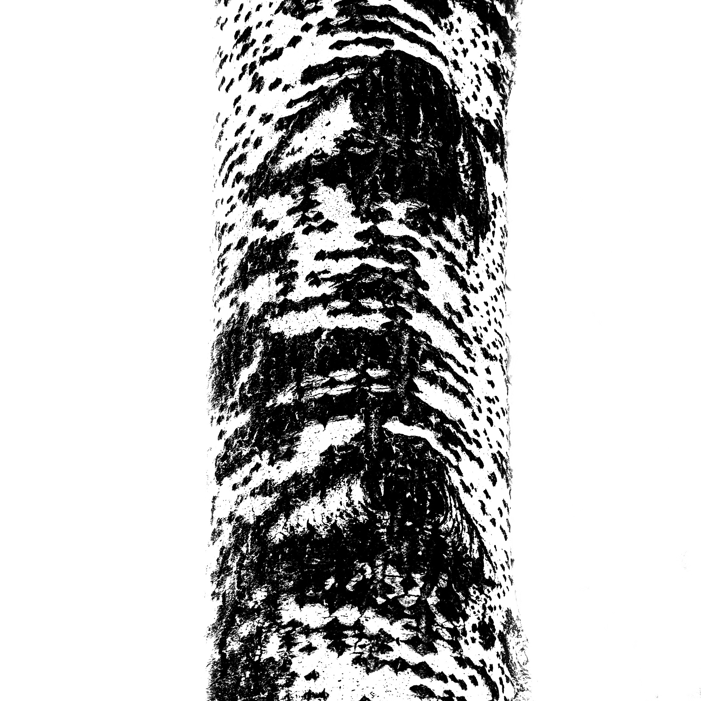
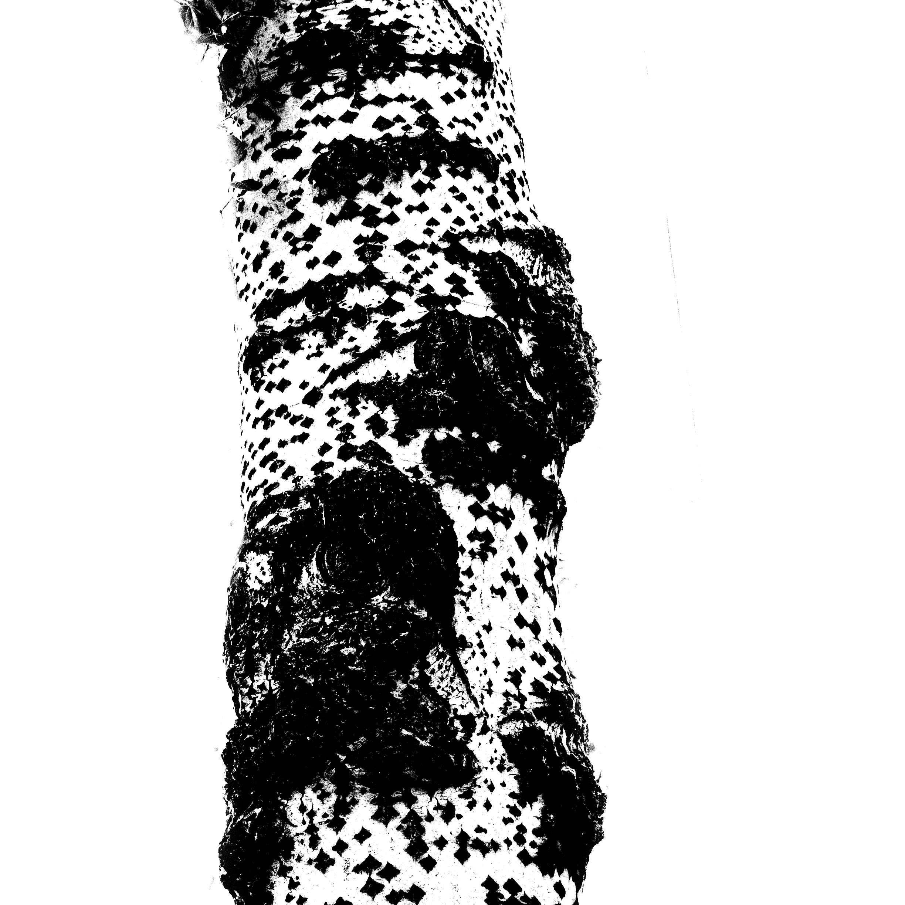
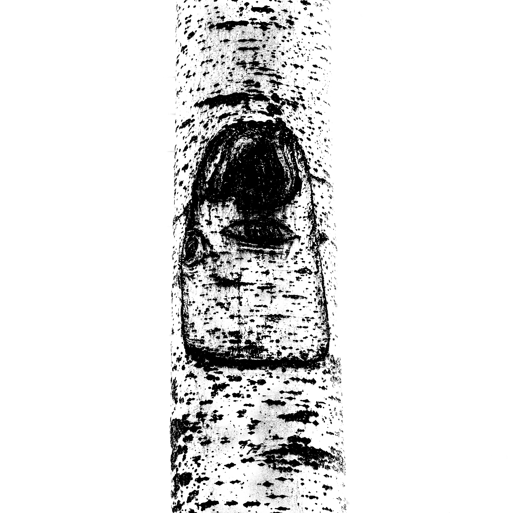
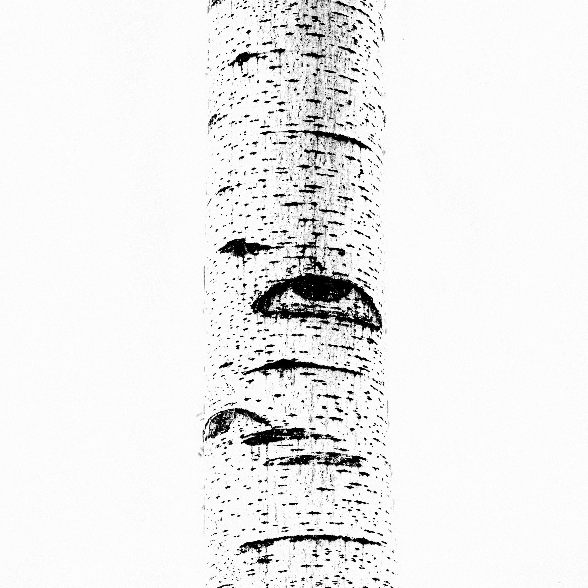

CITY SKIN
Black & White Photography Exhibition
北京
权力结构 / 黑白对比 / 历史压缩
城市权力结构
北京城市结构在高对比黑白影像中呈现出压缩的几何秩序。




历史残影
城市边缘的光影记录时间沉积。


历史残影
城市边缘的光影记录时间沉积。城市边缘的光影记录时间沉积。城市边缘的光影记录时间沉积。城市边缘的光影记录时间沉积。城市边缘的光影记录时间沉积。城市边缘的光影记录时间沉积。城市边缘的光影记录时间沉积。城市边缘的光影记录时间沉积。城市边缘的光影记录时间沉积。城市边缘的光影记录时间沉积。城市边缘的光影记录时间沉积。城市边缘的光影记录时间沉积。城市边缘的光影记录时间沉积。城市边缘的光影记录时间沉积。城市边缘的光影记录时间沉积。城市边缘的光影记录时间沉积。城市边缘的光影记录时间沉积。城市边缘的光影记录时间沉积。城市边缘的光影记录时间沉积。城市边缘的光影记录时间沉积。城市边缘的光影记录时间沉积。城市边缘的光影记录时间沉积。城市边缘的光影记录时间沉积。城市边缘的光影记录时间沉积。城市边缘的光影记录时间沉积。城市边缘的光影记录时间沉积。城市边缘的光影记录时间沉积。城市边缘的光影记录时间沉积。城市边缘的光影记录时间沉积。城市边缘的光影记录时间沉积。城市边缘的光影记录时间沉积。城市边缘的光影记录时间沉积。城市边缘的光影记录时间沉积。城市边缘的光影记录时间沉积。城市边缘的光影记录时间沉积。城市边缘的光影记录时间沉积。城市边缘的光影记录时间沉积。城市边缘的光影记录时间沉积。城市边缘的光影记录时间沉积。城市边缘的光影记录时间沉积。城市边缘的光影记录时间沉积。城市边缘的光影记录时间沉积。城市边缘的光影记录时间沉积。城市边缘的光影记录时间沉积。
天津
水系 / 工业 / 反射
河流工业
水面与工业结构的交叠影像。


广东
密度 / 流动 / 噪点
城市噪声
高密度城市的视觉流动。
甘肃
风化 / 空间 / 退场
风化地貌
时间在空间中的沉积状态。